Code
library(tidyverse)
library(scales)
library(ggplot2)
library(tidycmprsk)
library(ggsurvfit)
library(gtsummary)
# Load final_master from data management output
final_master <- readRDS("final_master.rds")library(tidyverse)
library(scales)
library(ggplot2)
library(tidycmprsk)
library(ggsurvfit)
library(gtsummary)
# Load final_master from data management output
final_master <- readRDS("final_master.rds")final_master <- final_master %>%
mutate(
hosp_90 = case_when(
hosp_status_90d == 1 ~ 1,
hosp_status_90d == 2 ~ 0,
TRUE ~ NA_real_
),
platinum_related_hosp = ifelse(side_effect == 1, 1, 0),
dd_percentile = ntile(dose_discrepancy, 100),
dd_decile = ntile(dose_discrepancy, 10)
)table_one <- final_master %>%
dplyr::select(
age, age_cat, sex, race, ethnicity, tumor_stage, cancer_type_cat_7,
carbo_AUC, carbo_AUC_cat, high_dose,
ici, Bevacizumab, Paclitaxel, Pemetrexed, Doxorubicin, Etoposide,
Gemcitabine, Pertuzumab, Trastuzumab, Docetaxel, Administered_alone,
hiv_rpdr, thyroid,
cci, ecog_score, bmi, bmi_cat,
pre_HGB_45days, pre_PLT_45days, pre_ALB_45days,
baseline_cys_c, baseline_cre,
baseline_cre_egfr, baseline_cys_c_egfr,
ckd_epi_gfr_cre_cys, ckd_epi_gfr_cre_cys_unindex,
carbo_dose_redcap, carbo_dose_cre_cys, dose_discrepancy, dose_diff_pct
) %>%
tbl_summary(
statistic = list(age ~ "{mean} ({sd})")
)
table_one| Characteristic | N = 5961 |
|---|---|
| age | 66 (12) |
| age_cat | |
| <=65 | 243 (41%) |
| 66-80 | 302 (51%) |
| >80 | 51 (8.6%) |
| sex | |
| Male | 202 (34%) |
| Female | 394 (66%) |
| race | |
| White | 497 (83%) |
| Black | 20 (3.4%) |
| Asian | 29 (4.9%) |
| Other | 9 (1.5%) |
| Unknown | 41 (6.9%) |
| ethnicity | |
| Non-Hispanic | 514 (86%) |
| Hispanic | 43 (7.2%) |
| Unknown | 39 (6.5%) |
| tumor_stage | |
| Local/Early | 190 (32%) |
| Advanced/Metastatic | 406 (68%) |
| cancer_type_cat_7 | |
| Thoracic | 200 (34%) |
| Breast | 73 (12%) |
| GI | 58 (9.7%) |
| GU | 13 (2.2%) |
| GYN | 187 (31%) |
| HEENT | 49 (8.2%) |
| Other | 16 (2.7%) |
| carbo_AUC | |
| 1.5 | 57 (9.6%) |
| 2 | 76 (13%) |
| 3 | 12 (2.0%) |
| 3.5 | 1 (0.2%) |
| 4 | 56 (9.4%) |
| 5 | 272 (46%) |
| 6 | 122 (20%) |
| carbo_AUC_cat | |
| <4 | 146 (24%) |
| >=4 | 450 (76%) |
| high_dose | |
| 0 | 202 (34%) |
| 1 | 394 (66%) |
| ici | 119 (20%) |
| Bevacizumab | 31 (5.2%) |
| Paclitaxel | 327 (55%) |
| Pemetrexed | 134 (22%) |
| Doxorubicin | 8 (1.3%) |
| Etoposide | 42 (7.0%) |
| Gemcitabine | 10 (1.7%) |
| Pertuzumab | 56 (9.4%) |
| Trastuzumab | 58 (9.7%) |
| Docetaxel | 61 (10%) |
| Administered_alone | 6 (1.0%) |
| hiv_rpdr | 7 (1.2%) |
| thyroid | 120 (20%) |
| cci | |
| mild | 16 (2.7%) |
| moderate | 52 (8.7%) |
| severe | 528 (89%) |
| ecog_score | |
| 0 | 290 (49%) |
| 1 | 261 (44%) |
| 2 | 36 (6.0%) |
| 3 | 9 (1.5%) |
| bmi | 26.8 (23.4, 30.8) |
| bmi_cat | |
| Underweight (<18.5) | 19 (3.2%) |
| Normal (18.5-25) | 200 (34%) |
| Overweight (25-30) | 203 (34%) |
| Obese (>=30) | 174 (29%) |
| pre_HGB_45days | 12.70 (11.70, 13.80) |
| pre_PLT_45days | 272 (216, 343) |
| pre_ALB_45days | 4.20 (4.00, 4.40) |
| baseline_cys_c | 1.02 (0.87, 1.23) |
| baseline_cre | 0.81 (0.70, 0.97) |
| baseline_cre_egfr | 87 (71, 97) |
| baseline_cys_c_egfr | 71 (55, 88) |
| ckd_epi_gfr_cre_cys | 81 (66, 96) |
| ckd_epi_gfr_cre_cys_unindex | 83 (67, 100) |
| carbo_dose_redcap | 476 (300, 616) |
| carbo_dose_cre_cys | 496 (300, 620) |
| dose_discrepancy | -1 (-43, 33) |
| dose_diff_pct | 0 (-10, 9) |
| 1 Mean (SD); n (%); Median (Q1, Q3) | |
table_one_incidence <- final_master %>%
select(Anemia_g2_90days, Anemia_g3_90days,
Throm_g2_90days, Throm_g3_90days,
AKI_g2_90days, AKI_g3_90days,
grade_2_aes, grade_3_aes,
hosp_90, platinum_related_hosp, death_90) %>%
tbl_summary(
statistic = list(
all_continuous() ~ "{mean} ({sd})",
all_categorical() ~ "{n} ({p}%)"
),
digits = list(
all_continuous() ~ 1,
all_categorical() ~ 1
)
)
table_one_incidence| Characteristic | N = 5961 |
|---|---|
| Anemia_g2_90days | 258.0 (43.3%) |
| Anemia_g3_90days | 76.0 (12.8%) |
| Throm_g2_90days | 56.0 (9.4%) |
| Throm_g3_90days | 22.0 (3.7%) |
| AKI_g2_90days | 36.0 (6.0%) |
| AKI_g3_90days | 5.0 (0.8%) |
| grade_2_aes | 278.0 (46.6%) |
| grade_3_aes | 86.0 (14.4%) |
| hosp_90 | 166.0 (27.9%) |
| platinum_related_hosp | 88.0 (14.8%) |
| death_90 | 22.0 (3.7%) |
| 1 n (%) | |
dose_long <- final_master %>%
select(record_id, carbo_dose_redcap, carbo_dose_cre_cys) %>%
pivot_longer(
cols = c(carbo_dose_redcap, carbo_dose_cre_cys),
names_to = "dose_type", values_to = "dose_mg"
) %>%
filter(!is.na(dose_mg)) %>%
mutate(dose_type = case_match(dose_type,
"carbo_dose_redcap" ~ "Actual (REDCap)",
"carbo_dose_cre_cys" ~ "Predicted (CKD-EPI Cr-Cys)"
))
ggplot(dose_long, aes(x = dose_mg, fill = dose_type)) +
geom_histogram(alpha = 0.5, bins = 40, position = "identity", color = "black") +
scale_fill_manual(values = c("Actual (REDCap)" = "#E31A1C",
"Predicted (CKD-EPI Cr-Cys)" = "#1F78B4")) +
labs(title = "Carboplatin Dose Distribution",
x = "Dose (mg)", y = "Number of Patients", fill = "Dose Type") +
theme_minimal(base_size = 14)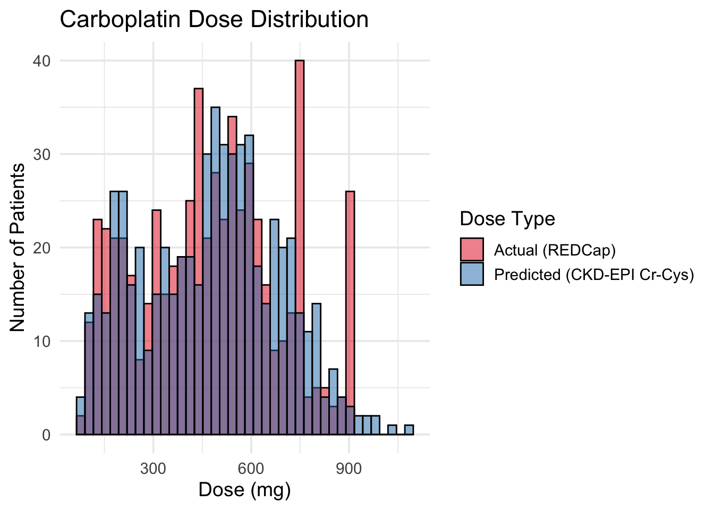
ggplot(dose_long, aes(x = dose_mg, fill = dose_type)) +
geom_histogram(color = "black", alpha = 0.7, bins = 40) +
facet_wrap(~ dose_type) +
geom_vline(
data = dose_long %>% group_by(dose_type) %>%
summarise(grp_mean = mean(dose_mg, na.rm = TRUE)),
aes(xintercept = grp_mean), color = "red", linetype = "dashed", linewidth = 0.8
) +
scale_fill_manual(values = c("Actual (REDCap)" = "#E31A1C",
"Predicted (CKD-EPI Cr-Cys)" = "#1F78B4")) +
labs(title = "Carboplatin Dose Distribution",
x = "Dose (mg)", y = "Number of Patients") +
theme_minimal(base_size = 14) +
theme(legend.position = "none")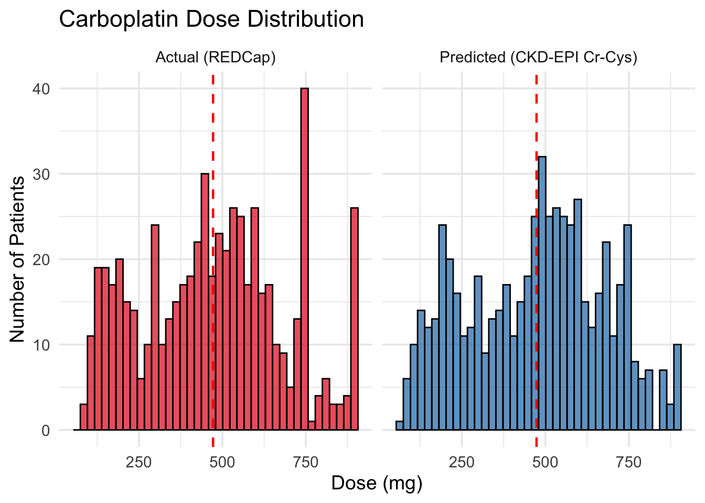
final_master <- final_master %>%
group_by(dd_decile) %>%
mutate(
anemia_2_rate_decile = mean(Anemia_g2_90days, na.rm = TRUE),
anemia_3_rate_decile = mean(Anemia_g3_90days, na.rm = TRUE),
throm_2_rate_decile = mean(Throm_g2_90days, na.rm = TRUE),
throm_3_rate_decile = mean(Throm_g3_90days, na.rm = TRUE),
aki_2_rate_decile = mean(AKI_g2_90days, na.rm = TRUE),
aki_3_rate_decile = mean(AKI_g3_90days, na.rm = TRUE),
hos_rate_decile = mean(hosp_90, na.rm = TRUE),
platinum_related_hos_rate_decile = mean(platinum_related_hosp, na.rm = TRUE),
death_rate_decile = mean(death_90, na.rm = TRUE)
) %>%
ungroup() %>%
mutate(dd_decile = as.numeric(dd_decile))# Median dose discrepancy at 60th and 70th percentile (for vertical line labels)
median_dd_p60 <- median(
final_master$dose_discrepancy[final_master$dd_percentile == 60], na.rm = TRUE)
median_dd_p70 <- median(
final_master$dose_discrepancy[final_master$dd_percentile == 70], na.rm = TRUE)loess_plot <- function(data, x, y, x_point, y_point, title, xlab, ylab,
vlines = NULL) {
p <- ggplot(data, aes(x = {{x}}, y = {{y}})) +
geom_point(aes(x = {{x_point}}, y = {{y_point}}),
size = 4, color = "black", shape = 19) +
geom_smooth(method = "loess", se = TRUE, span = 0.75, color = "blue", linewidth = 1.5) +
scale_y_continuous(labels = percent_format(accuracy = 1)) +
labs(title = title, x = xlab, y = ylab) +
theme_minimal(base_size = 12) +
theme(
axis.title.x = element_text(size = 11),
axis.title.y = element_text(size = 11),
axis.text.x = element_text(size = 10),
axis.text.y = element_text(size = 10),
plot.title = element_text(size = 13, face = "bold")
)
if (!is.null(vlines)) {
p <- p +
geom_vline(data = vlines, aes(xintercept = x),
linetype = "dashed", color = "red", linewidth = 0.7) +
geom_text(data = vlines, aes(x = x, y = Inf, label = label),
vjust = 1.5, hjust = -0.1, size = 3.2, color = "red")
}
p
}
loess_plot_raw <- function(data, x, y, title, xlab, ylab, vlines = NULL) {
p <- ggplot(data, aes(x = {{x}}, y = {{y}})) +
geom_smooth(method = "loess", se = TRUE, span = 0.75, color = "blue", linewidth = 1.5) +
scale_y_continuous(labels = percent_format(accuracy = 1)) +
labs(title = title, x = xlab, y = ylab) +
theme_minimal(base_size = 12) +
theme(
axis.title.x = element_text(size = 11),
axis.title.y = element_text(size = 11),
axis.text.x = element_text(size = 10),
axis.text.y = element_text(size = 10),
plot.title = element_text(size = 13, face = "bold")
)
if (!is.null(vlines)) {
p <- p +
geom_vline(data = vlines, aes(xintercept = x),
linetype = "dashed", color = "red", linewidth = 0.7) +
geom_text(data = vlines, aes(x = x, y = Inf, label = label),
vjust = 1.5, hjust = -0.1, size = 3.2, color = "red")
}
p
}# Vertical reference lines for percentile LOESS plots
pct_vlines <- data.frame(
x = c(60, 70),
label = c(paste0("median: ", round(median_dd_p60, 0), ""),
paste0("median: ", round(median_dd_p70, 0), ""))
)loess_plot(
data = final_master, x = dd_percentile, y = Anemia_g2_90days,
x_point = dd_decile * 10, y_point = anemia_2_rate_decile,
title = "Grade >= 2 Anemia",
xlab = "Percentile of Dose Discrepancy (REDCap - CKD-EPI Cr-Cys)",
ylab = "Grade >= 2 Anemia",
vlines = pct_vlines
)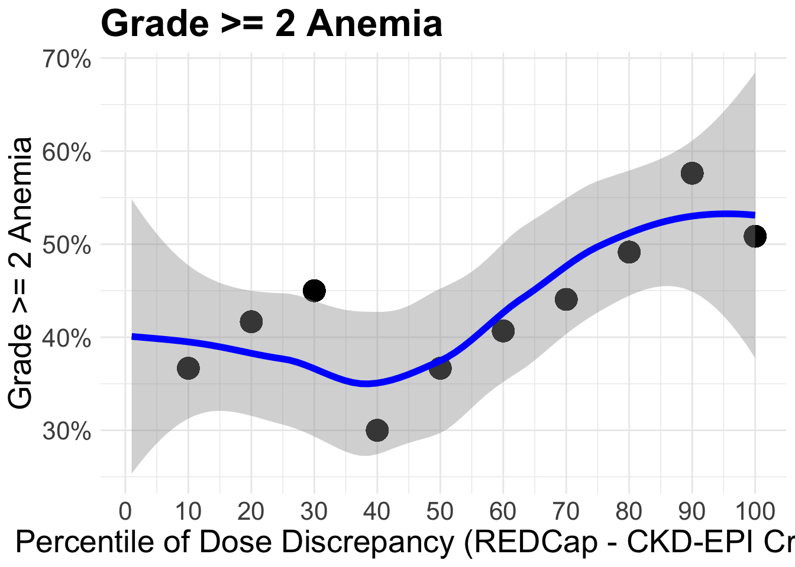
loess_plot(
data = final_master, x = dd_percentile, y = Anemia_g3_90days,
x_point = dd_decile * 10, y_point = anemia_3_rate_decile,
title = "Grade >= 3 Anemia",
xlab = "Percentile of Dose Discrepancy (REDCap - CKD-EPI Cr-Cys)",
ylab = "Grade >= 3 Anemia",
vlines = pct_vlines
)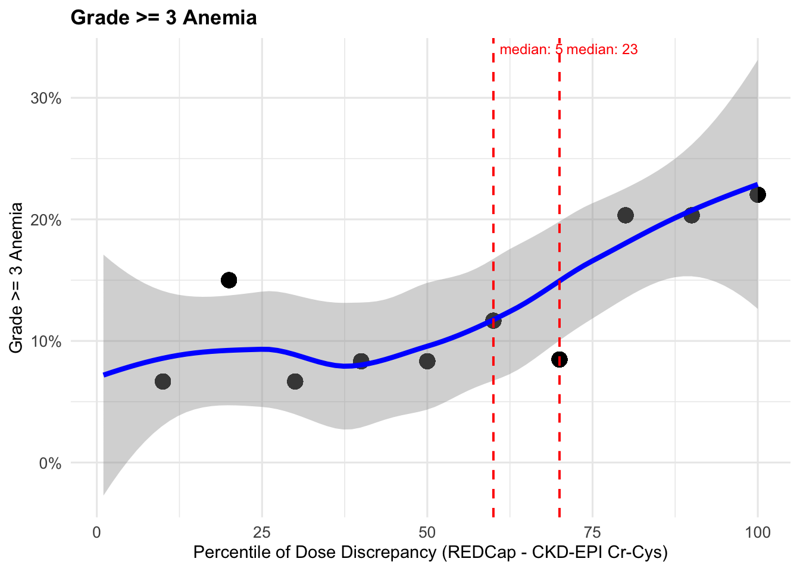
loess_plot(
data = final_master, x = dd_percentile, y = Throm_g2_90days,
x_point = dd_decile * 10, y_point = throm_2_rate_decile,
title = "Grade >= 2 Thrombocytopenia",
xlab = "Percentile of Dose Discrepancy (REDCap - CKD-EPI Cr-Cys)",
ylab = "Grade >= 2 Thrombocytopenia",
vlines = pct_vlines
)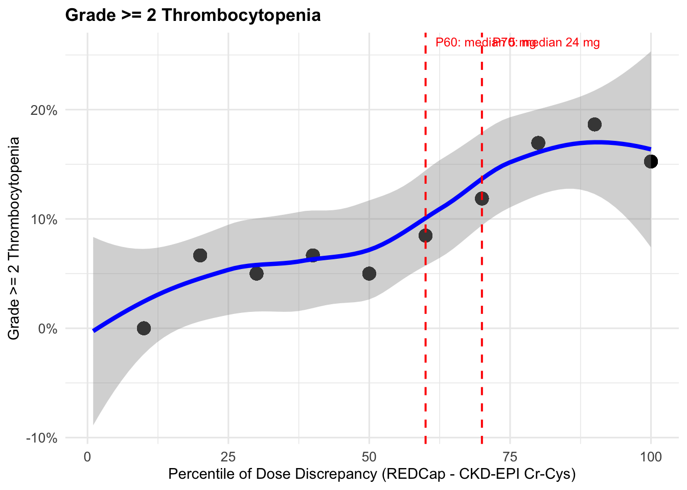
loess_plot(
data = final_master, x = dd_percentile, y = Throm_g3_90days,
x_point = dd_decile * 10, y_point = throm_3_rate_decile,
title = "Grade >= 3 Thrombocytopenia",
xlab = "Percentile of Dose Discrepancy (REDCap - CKD-EPI Cr-Cys)",
ylab = "Grade >= 3 Thrombocytopenia",
vlines = pct_vlines
)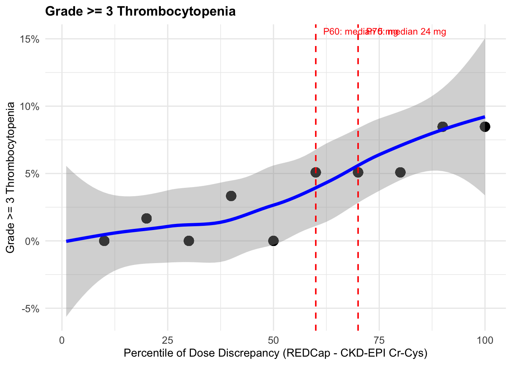
loess_plot(
data = final_master, x = dd_percentile, y = AKI_g2_90days,
x_point = dd_decile * 10, y_point = aki_2_rate_decile,
title = "Grade >= 2 Creatinine Increased",
xlab = "Percentile of Dose Discrepancy (REDCap - CKD-EPI Cr-Cys)",
ylab = "Grade >= 2 Creatinine Increased",
vlines = pct_vlines
)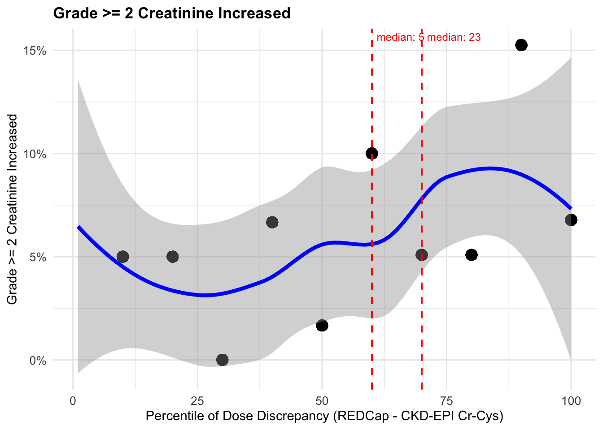
loess_plot(
data = final_master, x = dd_percentile, y = AKI_g3_90days,
x_point = dd_decile * 10, y_point = aki_3_rate_decile,
title = "Grade >= 3 Creatinine Increased",
xlab = "Percentile of Dose Discrepancy (REDCap - CKD-EPI Cr-Cys)",
ylab = "Grade >= 3 Creatinine Increased",
vlines = pct_vlines
)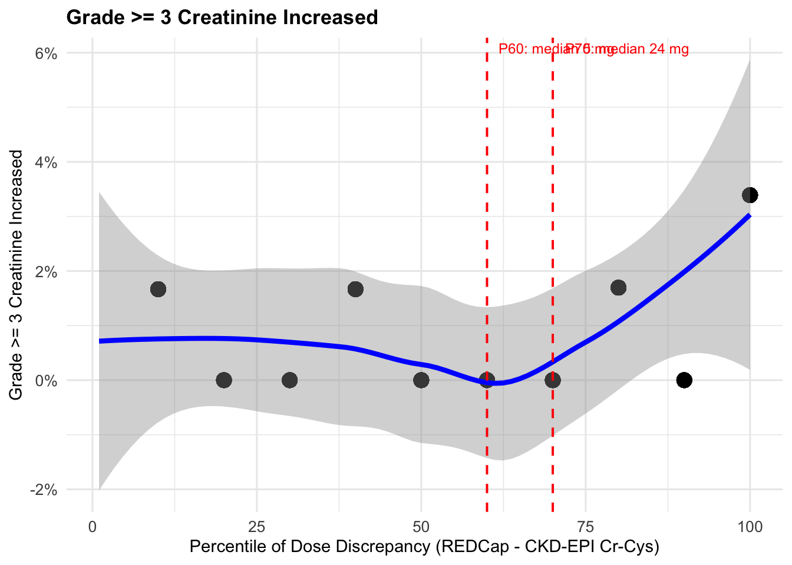
loess_plot(
data = final_master, x = dd_percentile, y = hosp_90,
x_point = dd_decile * 10, y_point = hos_rate_decile,
title = "Overall Hospitalization",
xlab = "Percentile of Dose Discrepancy (REDCap - CKD-EPI Cr-Cys)",
ylab = "Overall Hospitalization",
vlines = pct_vlines
)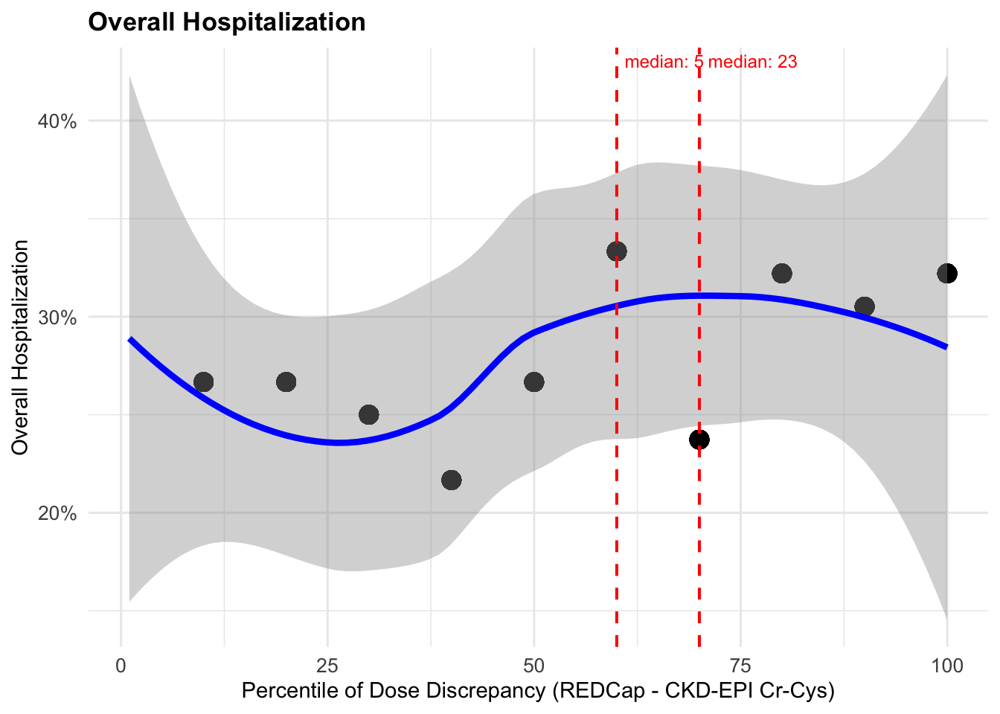
raw_vlines <- data.frame(
x = c(25, 50, 75),
label = c("25 mg", "50 mg", "75 mg")
)loess_plot_raw(
data = final_master, x = dose_discrepancy, y = Anemia_g2_90days,
title = "Grade >= 2 Anemia",
xlab = "Dose Discrepancy (mg): Actual - Predicted",
ylab = "Grade >= 2 Anemia",
vlines = raw_vlines
)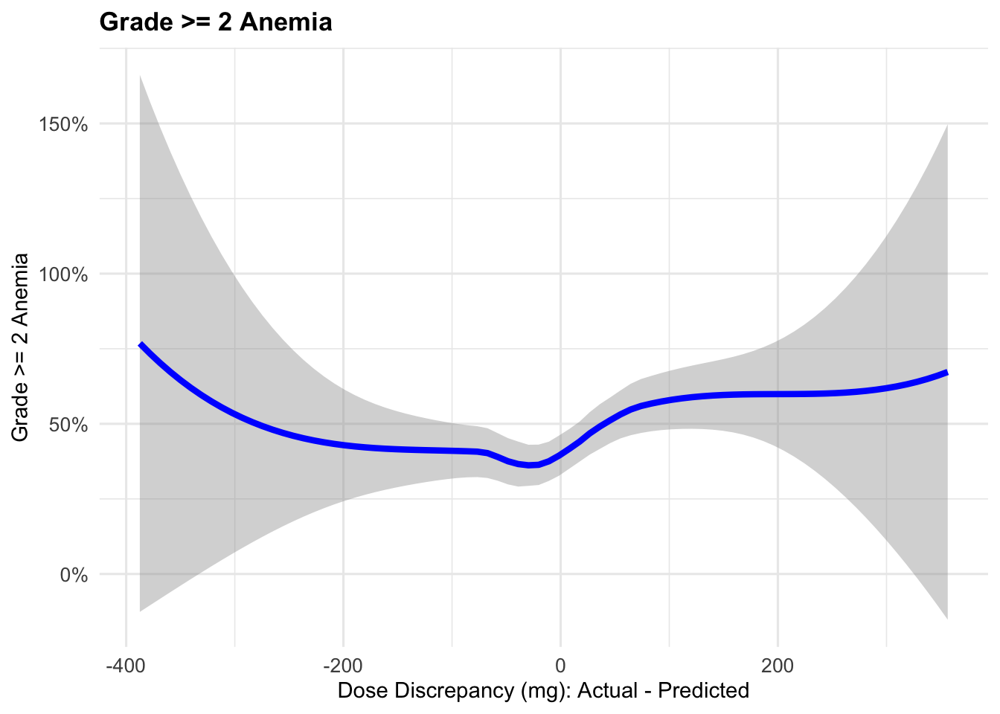
loess_plot_raw(
data = final_master, x = dose_discrepancy, y = Anemia_g3_90days,
title = "Grade >= 3 Anemia",
xlab = "Dose Discrepancy (mg): Actual - Predicted",
ylab = "Grade >= 3 Anemia",
vlines = raw_vlines
)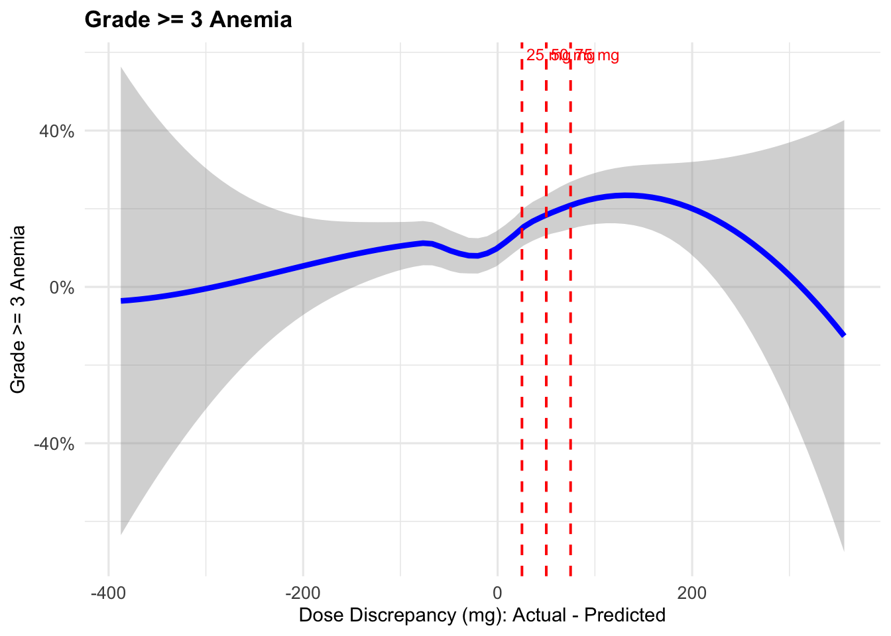
loess_plot_raw(
data = final_master, x = dose_discrepancy, y = Throm_g2_90days,
title = "Grade >= 2 Thrombocytopenia",
xlab = "Dose Discrepancy (mg): Actual - Predicted",
ylab = "Grade >= 2 Thrombocytopenia",
vlines = raw_vlines
)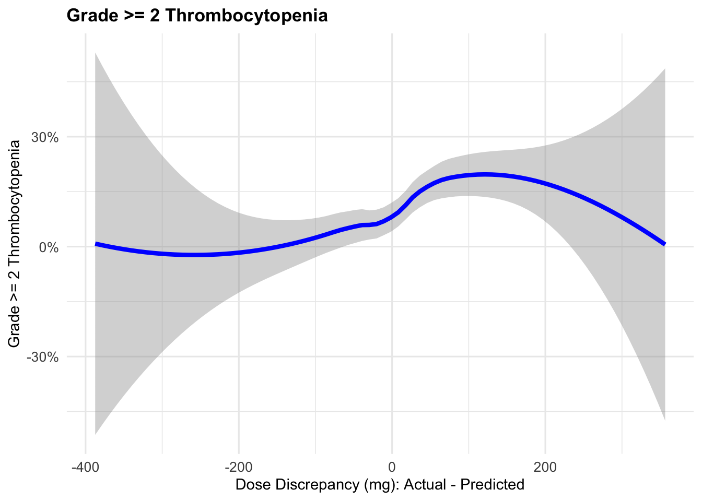
loess_plot_raw(
data = final_master, x = dose_discrepancy, y = Throm_g3_90days,
title = "Grade >= 3 Thrombocytopenia",
xlab = "Dose Discrepancy (mg): Actual - Predicted",
ylab = "Grade >= 3 Thrombocytopenia",
vlines = raw_vlines
)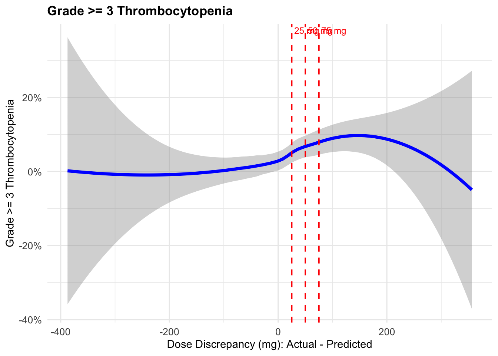
loess_plot_raw(
data = final_master, x = dose_discrepancy, y = AKI_g2_90days,
title = "Grade >= 2 Creatinine Increased",
xlab = "Dose Discrepancy (mg): Actual - Predicted",
ylab = "Grade >= 2 Creatinine Increased",
vlines = raw_vlines
)
loess_plot_raw(
data = final_master, x = dose_discrepancy, y = AKI_g3_90days,
title = "Grade >= 3 Creatinine Increased",
xlab = "Dose Discrepancy (mg): Actual - Predicted",
ylab = "Grade >= 3 Creatinine Increased",
vlines = raw_vlines
)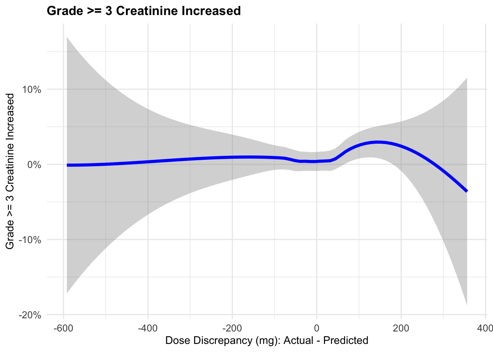
loess_plot_raw(
data = final_master, x = dose_discrepancy, y = hosp_90,
title = "Overall Hospitalization",
xlab = "Dose Discrepancy (mg): Actual - Predicted",
ylab = "Overall Hospitalization",
vlines = raw_vlines
)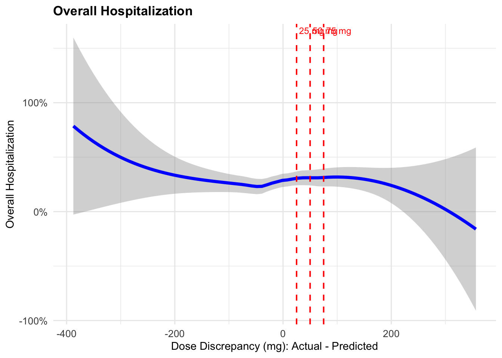
# IQR-based outlier detection
dd_stats <- boxplot.stats(final_master$dose_discrepancy[!is.na(final_master$dose_discrepancy)])
cat("Dose Discrepancy Summary:\n")Dose Discrepancy Summary:cat(" Median:", median(final_master$dose_discrepancy, na.rm = TRUE), "mg\n") Median: -0.5883616 mgcat(" IQR: ", IQR(final_master$dose_discrepancy, na.rm = TRUE), "mg\n") IQR: 75.05443 mgcat(" Lower fence:", dd_stats$stats[1], "mg\n") Lower fence: -151.658 mgcat(" Upper fence:", dd_stats$stats[5], "mg\n") Upper fence: 144.5051 mgcat(" N outliers: ", length(dd_stats$out), "\n") N outliers: 34 # Flag outlier patients
outlier_ids <- final_master %>%
filter(dose_discrepancy %in% dd_stats$out) %>%
select(record_id, EMPI, carbo_AUC, carbo_dose_redcap, carbo_dose_cre_cys,
dose_discrepancy, dose_diff_pct,
ckd_epi_gfr_cre_cys_unindex, ckd_epi_gfr_cre_cys_unindex_cap125)
cat("\nOutlier record_ids:\n")
Outlier record_ids:print(outlier_ids %>% select(record_id, dose_discrepancy, dose_diff_pct, carbo_AUC,
carbo_dose_redcap, carbo_dose_cre_cys),
n = Inf)# A tibble: 34 × 6
record_id dose_discrepancy dose_diff_pct carbo_AUC carbo_dose_redcap
<dbl> <dbl> <dbl> <dbl> <dbl>
1 953 176. 31.0 5 742.
2 243 -176. -33.1 5 356.
3 719 162. 22.8 6 871.
4 457 168. 23.0 6 900
5 485 -168 -22.4 5 582
6 152 157. 51.9 4 461.
7 537 152. 32.8 5 614
8 411 -172. -29.3 5 415
9 952 225. 34.9 6 872.
10 114 147. 24.5 6 747
11 192 -272. -45.4 5 327.
12 162 -160. -28.4 5 404.
13 605 168. 22.9 6 900
14 242 149. 35.1 4 574.
15 716 156. 27.1 5 730.
16 144 193. 35.2 5 741
17 791 175. 51.4 5 517
18 391 -170. -22.5 6 584.
19 724 356. 66.3 6 894
20 408 163. 22.8 6 881.
21 406 233. 55.5 5 654.
22 549 212. 30.9 6 900
23 902 151. 20.2 6 900
24 563 210. 33.3 6 839.
25 334 176. 37.0 5 650.
26 314 177. 31.0 5 750
27 645 231. 34.6 6 900
28 39 150 33.3 3 600
29 291 -387. -64.7 5 212.
30 625 159. 42.8 5 530.
31 809 154. 25.9 5 750
32 115 151. 43.5 6 497.
33 221 -164. -24.5 5 504.
34 287 180. 36.5 5 673
# ℹ 1 more variable: carbo_dose_cre_cys <dbl>ggplot(final_master, aes(y = dose_discrepancy)) +
geom_boxplot(fill = "#1F78B4", alpha = 0.5, outlier.color = "red", outlier.size = 2) +
labs(title = "Dose Discrepancy: Boxplot with Outliers",
y = "Dose Discrepancy (mg): Actual - Predicted",
subtitle = "Red points = IQR outliers") +
theme_minimal(base_size = 14) +
theme(axis.text.x = element_blank(), axis.ticks.x = element_blank())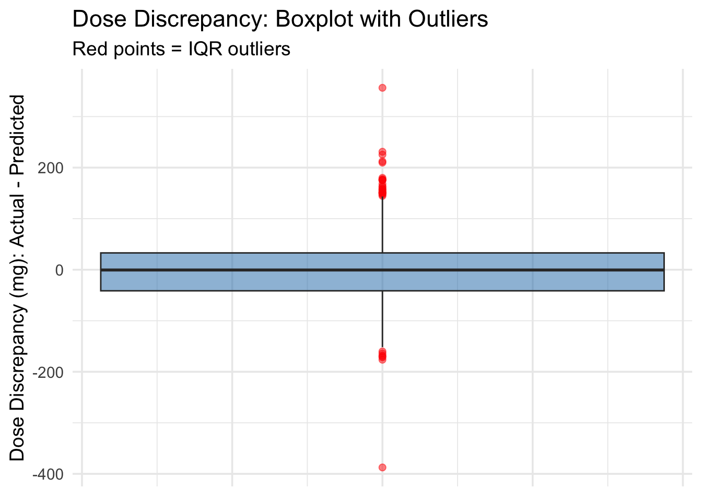
# Subset to carboplatin patients with AUC < 4
fm_lt4 <- final_master %>%
filter(carbo_AUC_cat == "<4")
# Recompute percentile and decile within this subset
fm_lt4 <- fm_lt4 %>%
mutate(
dd_percentile_lt4 = ntile(dose_discrepancy, 100),
dd_decile_lt4 = ntile(dose_discrepancy, 10)
) %>%
group_by(dd_decile_lt4) %>%
mutate(
anemia_2_rate_decile_lt4 = mean(Anemia_g2_90days, na.rm = TRUE),
anemia_3_rate_decile_lt4 = mean(Anemia_g3_90days, na.rm = TRUE),
throm_2_rate_decile_lt4 = mean(Throm_g2_90days, na.rm = TRUE),
throm_3_rate_decile_lt4 = mean(Throm_g3_90days, na.rm = TRUE),
aki_2_rate_decile_lt4 = mean(AKI_g2_90days, na.rm = TRUE),
aki_3_rate_decile_lt4 = mean(AKI_g3_90days, na.rm = TRUE),
hos_rate_decile_lt4 = mean(hosp_90, na.rm = TRUE),
platinum_related_hos_rate_decile_lt4 = mean(platinum_related_hosp, na.rm = TRUE),
death_rate_decile_lt4 = mean(death_90, na.rm = TRUE)
) %>%
ungroup() %>%
mutate(dd_decile_lt4 = as.numeric(dd_decile_lt4))# Median dose discrepancy at P60 and P70 within the AUC < 4 subset
median_dd_p60_lt4 <- median(
fm_lt4$dose_discrepancy[fm_lt4$dd_percentile_lt4 == 60], na.rm = TRUE)
median_dd_p70_lt4 <- median(
fm_lt4$dose_discrepancy[fm_lt4$dd_percentile_lt4 == 70], na.rm = TRUE)
pct_vlines_lt4 <- data.frame(
x = c(60, 70),
label = c(paste0("median: ", round(median_dd_p60_lt4, 0), ""),
paste0("median: ", round(median_dd_p70_lt4, 0), ""))
)loess_plot(
data = fm_lt4, x = dd_percentile_lt4, y = Anemia_g2_90days,
x_point = dd_decile_lt4 * 10, y_point = anemia_2_rate_decile_lt4,
title = "Grade >= 2 Anemia (Carboplatin AUC < 4)",
xlab = "Percentile of Dose Discrepancy (REDCap - CKD-EPI Cr-Cys)",
ylab = "Grade >= 2 Anemia",
vlines = pct_vlines_lt4
)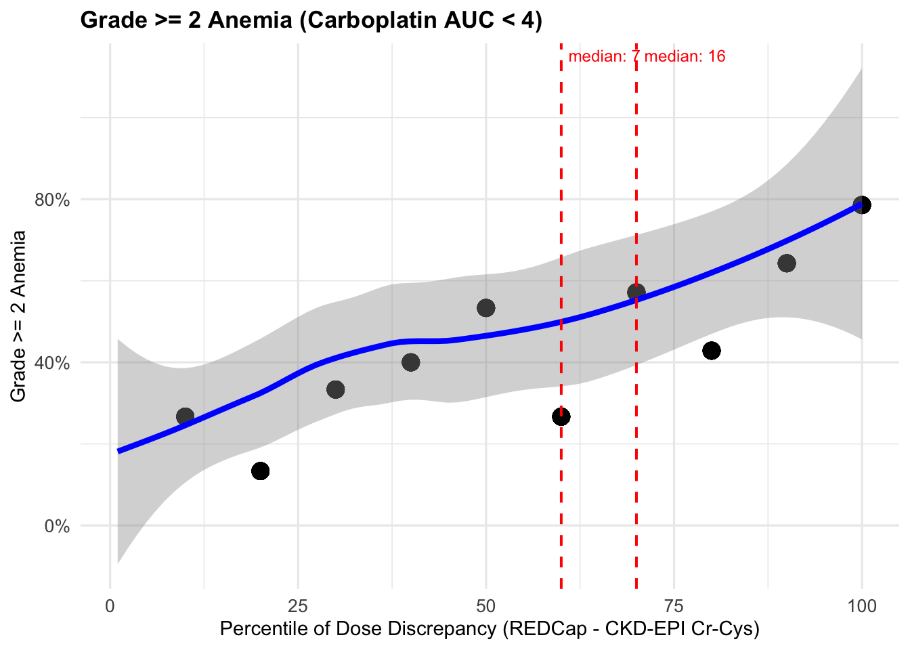
loess_plot(
data = fm_lt4, x = dd_percentile_lt4, y = Anemia_g3_90days,
x_point = dd_decile_lt4 * 10, y_point = anemia_3_rate_decile_lt4,
title = "Grade >= 3 Anemia (Carboplatin AUC < 4)",
xlab = "Percentile of Dose Discrepancy (REDCap - CKD-EPI Cr-Cys)",
ylab = "Grade >= 3 Anemia",
vlines = pct_vlines_lt4
)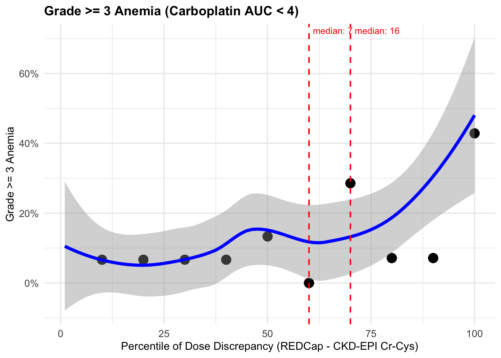
loess_plot(
data = fm_lt4, x = dd_percentile_lt4, y = Throm_g2_90days,
x_point = dd_decile_lt4 * 10, y_point = throm_2_rate_decile_lt4,
title = "Grade >= 2 Thrombocytopenia (Carboplatin AUC < 4)",
xlab = "Percentile of Dose Discrepancy (REDCap - CKD-EPI Cr-Cys)",
ylab = "Grade >= 2 Thrombocytopenia",
vlines = pct_vlines_lt4
)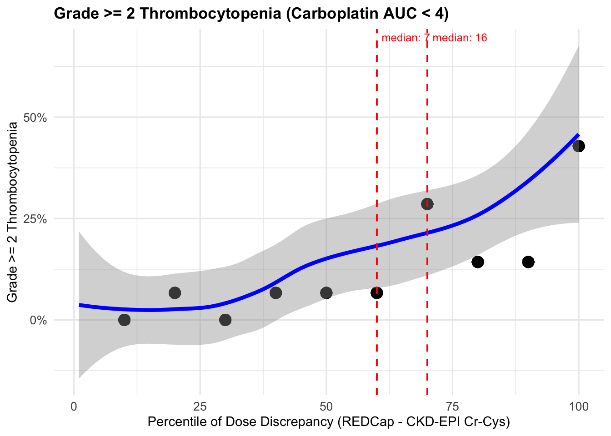
loess_plot(
data = fm_lt4, x = dd_percentile_lt4, y = Throm_g3_90days,
x_point = dd_decile_lt4 * 10, y_point = throm_3_rate_decile_lt4,
title = "Grade >= 3 Thrombocytopenia (Carboplatin AUC < 4)",
xlab = "Percentile of Dose Discrepancy (REDCap - CKD-EPI Cr-Cys)",
ylab = "Grade >= 3 Thrombocytopenia",
vlines = pct_vlines_lt4
)
loess_plot(
data = fm_lt4, x = dd_percentile_lt4, y = AKI_g2_90days,
x_point = dd_decile_lt4 * 10, y_point = aki_2_rate_decile_lt4,
title = "Grade >= 2 Creatinine Increased (Carboplatin AUC < 4)",
xlab = "Percentile of Dose Discrepancy (REDCap - CKD-EPI Cr-Cys)",
ylab = "Grade >= 2 Creatinine Increased",
vlines = pct_vlines_lt4
)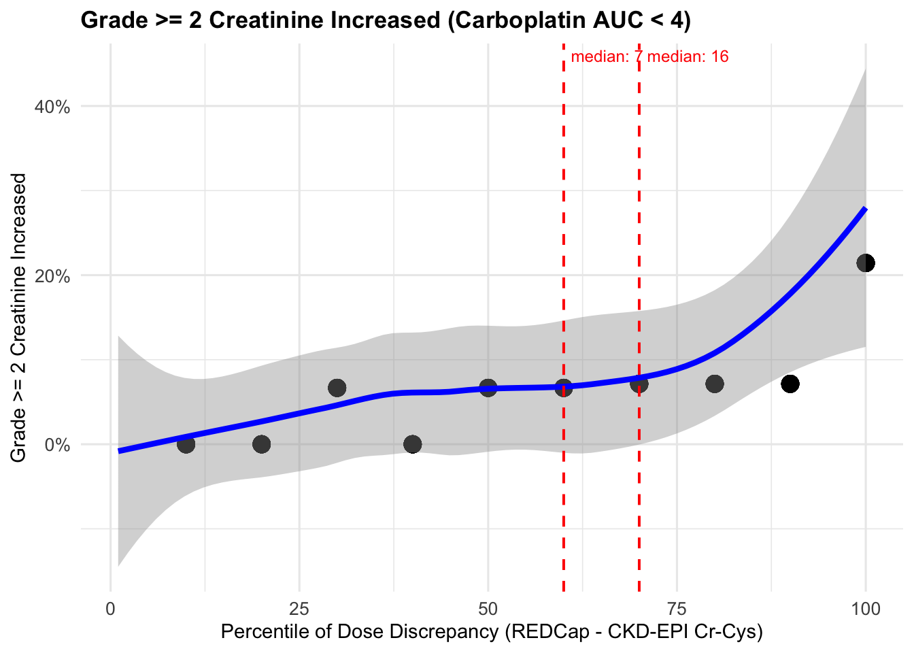
loess_plot(
data = fm_lt4, x = dd_percentile_lt4, y = AKI_g3_90days,
x_point = dd_decile_lt4 * 10, y_point = aki_3_rate_decile_lt4,
title = "Grade >= 3 Creatinine Increased (Carboplatin AUC < 4)",
xlab = "Percentile of Dose Discrepancy (REDCap - CKD-EPI Cr-Cys)",
ylab = "Grade >= 3 Creatinine Increased",
vlines = pct_vlines_lt4
)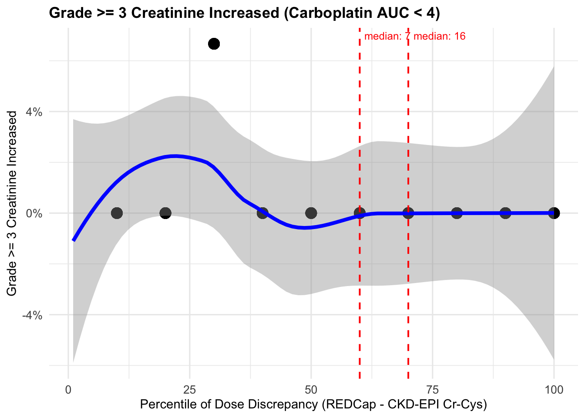
loess_plot(
data = fm_lt4, x = dd_percentile_lt4, y = hosp_90,
x_point = dd_decile_lt4 * 10, y_point = hos_rate_decile_lt4,
title = "Overall Hospitalization (Carboplatin AUC < 4)",
xlab = "Percentile of Dose Discrepancy (REDCap - CKD-EPI Cr-Cys)",
ylab = "Overall Hospitalization",
vlines = pct_vlines_lt4
)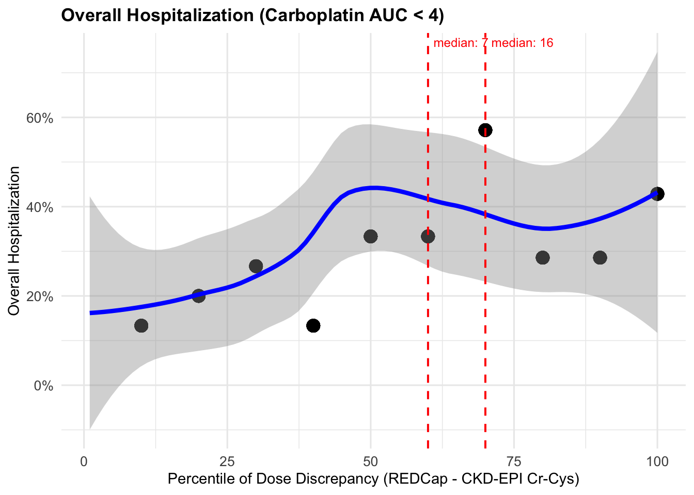
loess_plot_raw(
data = fm_lt4, x = dose_discrepancy, y = Anemia_g2_90days,
title = "Grade >= 2 Anemia (Carboplatin AUC < 4)",
xlab = "Dose Discrepancy (mg): Actual - Predicted",
ylab = "Grade >= 2 Anemia",
vlines = raw_vlines
)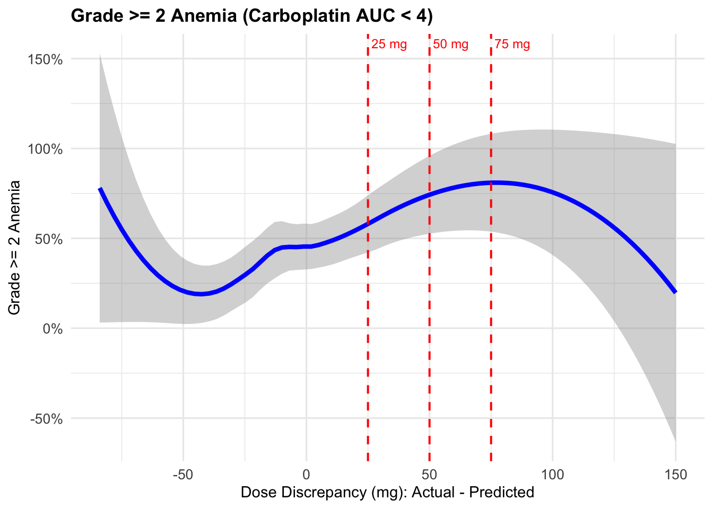
loess_plot_raw(
data = fm_lt4, x = dose_discrepancy, y = Anemia_g3_90days,
title = "Grade >= 3 Anemia (Carboplatin AUC < 4)",
xlab = "Dose Discrepancy (mg): Actual - Predicted",
ylab = "Grade >= 3 Anemia",
vlines = raw_vlines
)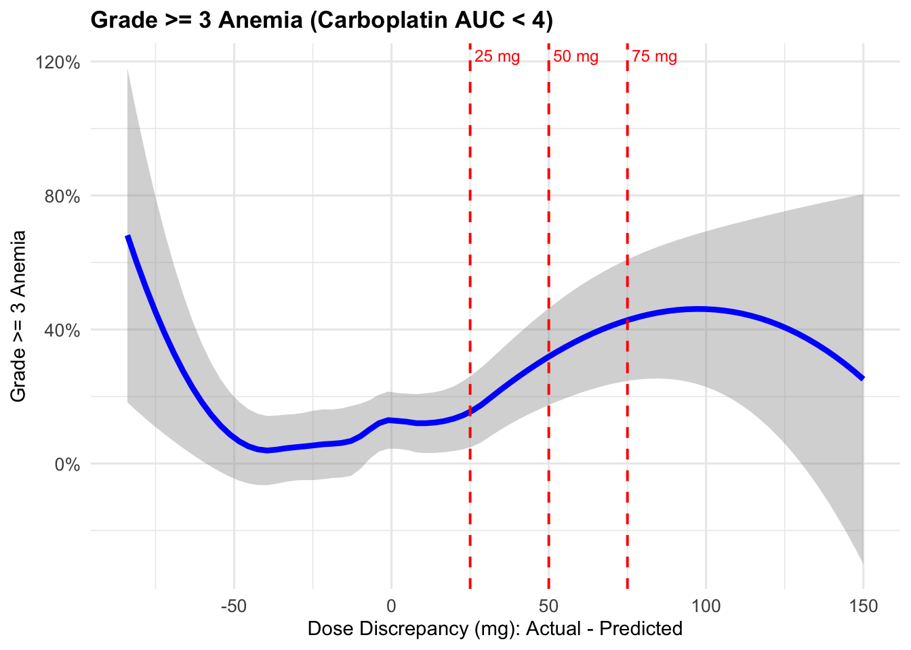
loess_plot_raw(
data = fm_lt4, x = dose_discrepancy, y = Throm_g2_90days,
title = "Grade >= 2 Thrombocytopenia (Carboplatin AUC < 4)",
xlab = "Dose Discrepancy (mg): Actual - Predicted",
ylab = "Grade >= 2 Thrombocytopenia",
vlines = raw_vlines
)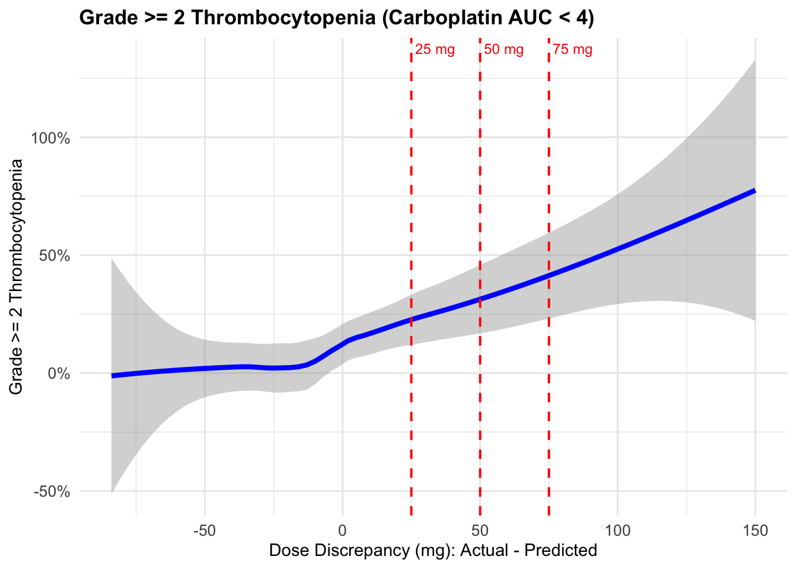
loess_plot_raw(
data = fm_lt4, x = dose_discrepancy, y = Throm_g3_90days,
title = "Grade >= 3 Thrombocytopenia (Carboplatin AUC < 4)",
xlab = "Dose Discrepancy (mg): Actual - Predicted",
ylab = "Grade >= 3 Thrombocytopenia",
vlines = raw_vlines
)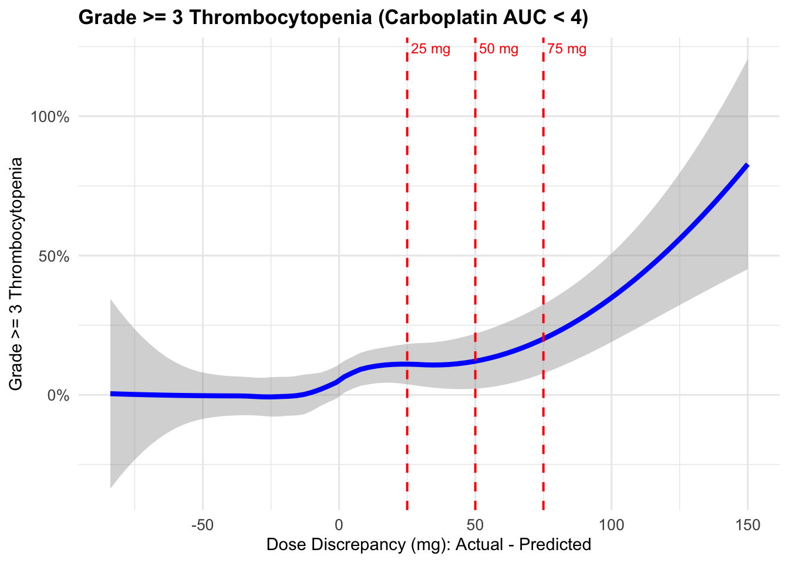
loess_plot_raw(
data = fm_lt4, x = dose_discrepancy, y = AKI_g2_90days,
title = "Grade >= 2 Creatinine Increased (Carboplatin AUC < 4)",
xlab = "Dose Discrepancy (mg): Actual - Predicted",
ylab = "Grade >= 2 Creatinine Increased",
vlines = raw_vlines
)
loess_plot_raw(
data = fm_lt4, x = dose_discrepancy, y = AKI_g3_90days,
title = "Grade >= 3 Creatinine Increased (Carboplatin AUC < 4)",
xlab = "Dose Discrepancy (mg): Actual - Predicted",
ylab = "Grade >= 3 Creatinine Increased",
vlines = raw_vlines
)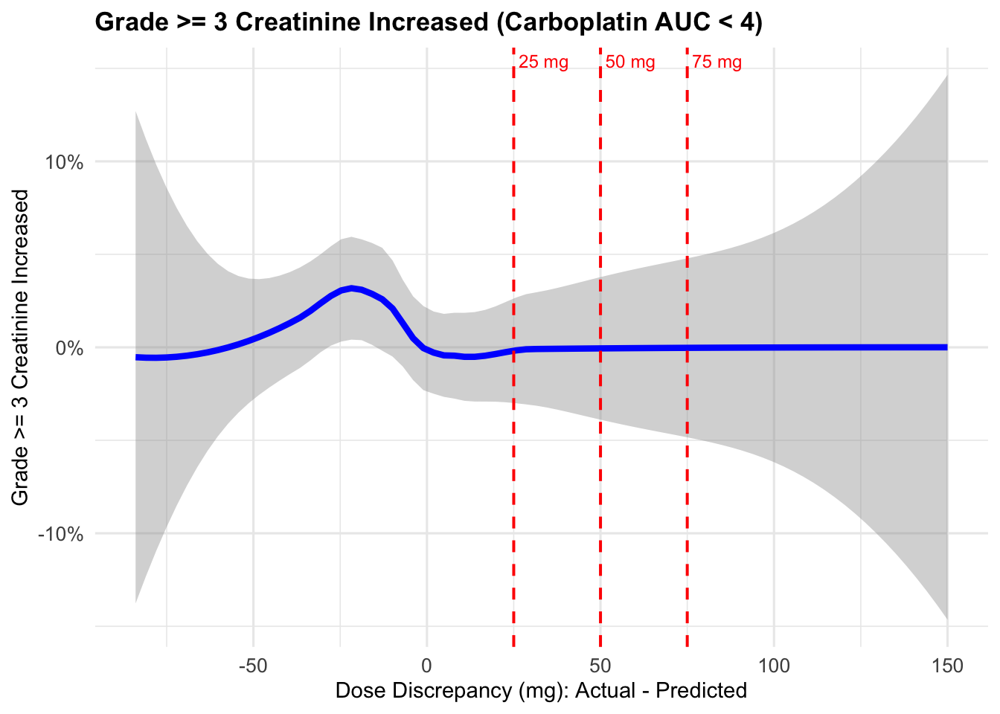
loess_plot_raw(
data = fm_lt4, x = dose_discrepancy, y = hosp_90,
title = "Overall Hospitalization (Carboplatin AUC < 4)",
xlab = "Dose Discrepancy (mg): Actual - Predicted",
ylab = "Overall Hospitalization",
vlines = raw_vlines
)